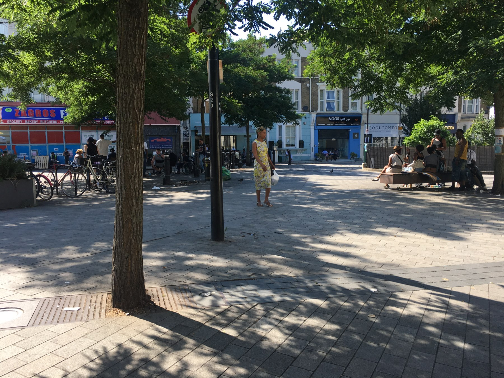

Preventing homelessness across Westminster

mapping local resources across the three wards — Harrow Road, Westbourne and Queen's Park
This seven-week project explored the experiences of people in the Borough of Westminster at risk of homelessness, to find ways to support them before their housing situation reached crisis point. I scoped, planned and delivered this research in collaboration with Kevin Marshall.
place-based approach
3 wards
community engagement
32 stakeholder interviews
ethnographic research
16 resident ethnographies
place-based discovery
01
Identifying who's at risk
Using data on the wider determinants of health and the Index of Multiple Deprivation, we identified the areas at highest risk. After that, I mapped each area's assets by engaging with stakeholders and community connectors.
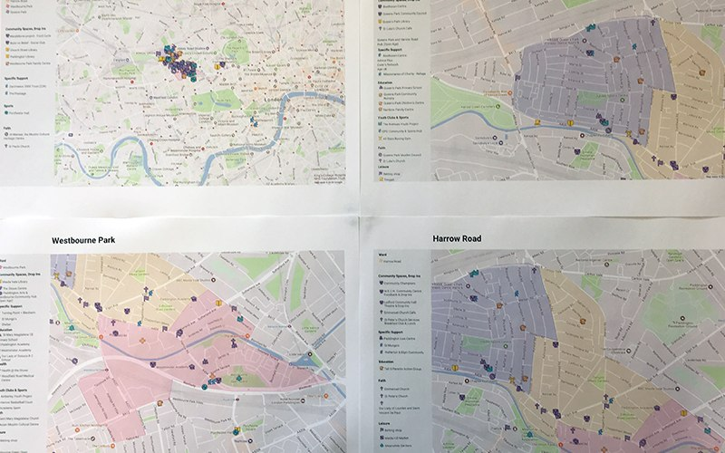
fieldwork in the places residents actually spend time, and asset maps printed for each ward
ethnographic research
02
Capturing where residents go for help and support
Stakeholder interviews led me to residents facing difficult life situations — struggling with housing or finances, coping with a close family member who was sick or had passed away, leaving school without completing it, or being a single parent under 25. We know experiences like these can put someone more at risk of becoming homeless. Active listening and deep empathy built enough trust for them to share more about their own lives.
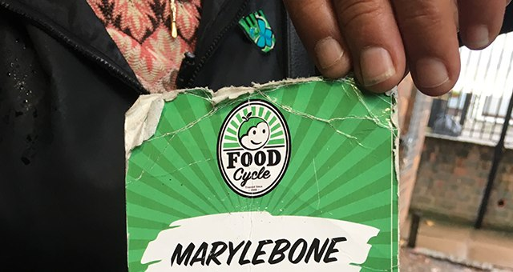
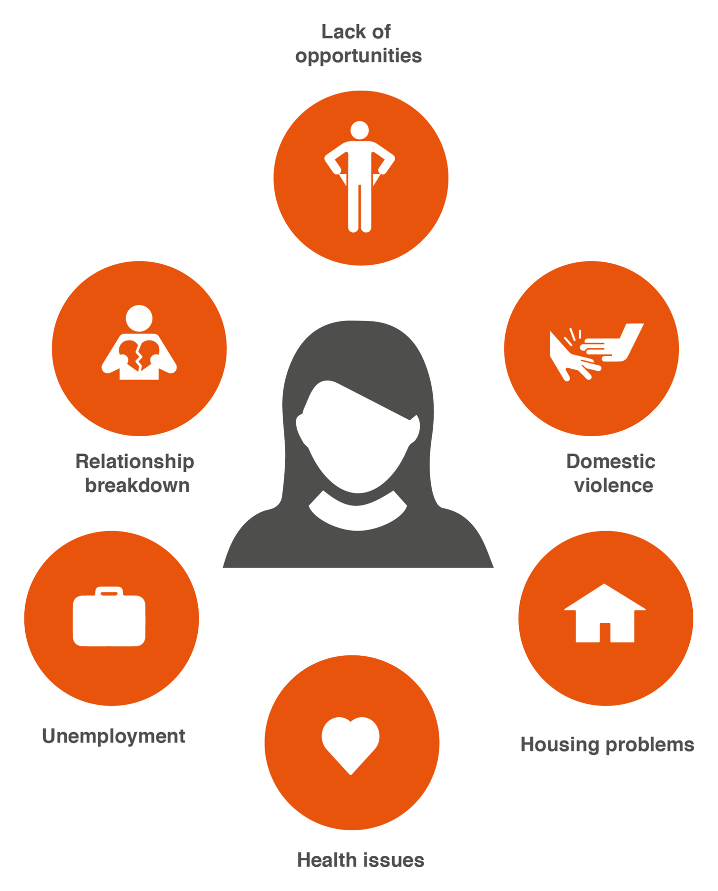
the everyday objects that anchored residents' weeks, and the interlinked situations putting them at risk
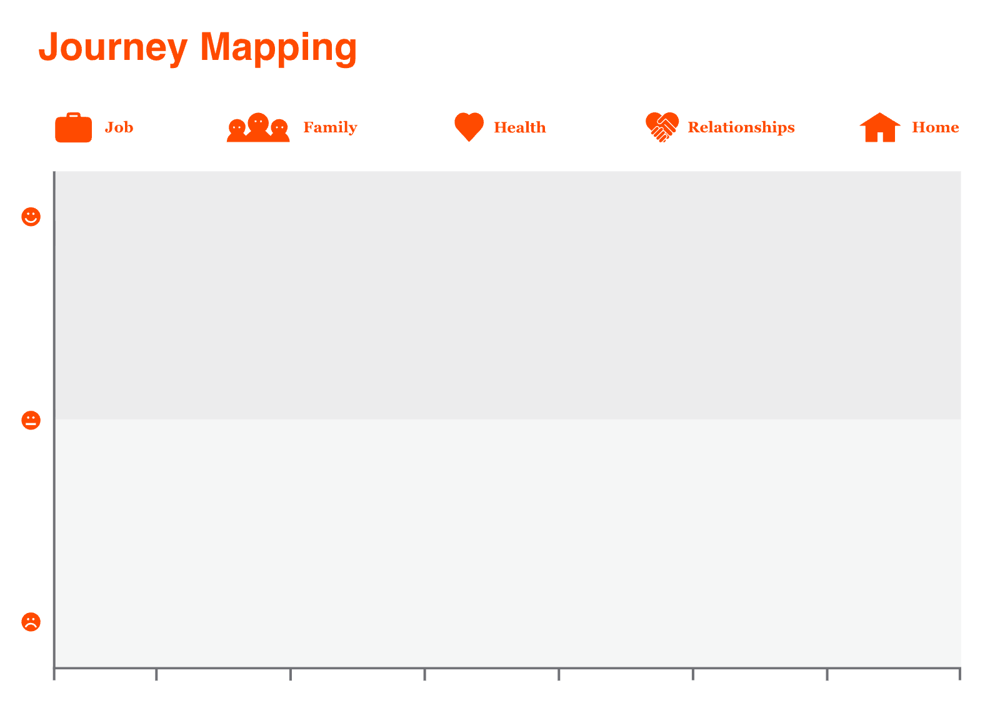
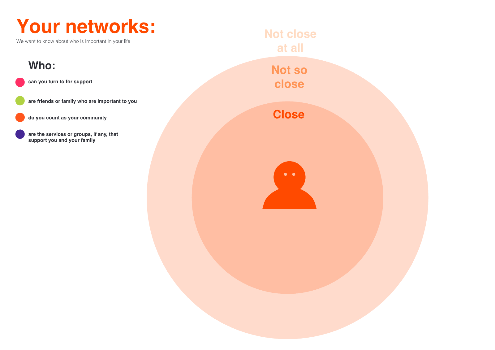
design probes residents filled in themselves — mapping their journey and the people they turn to for support
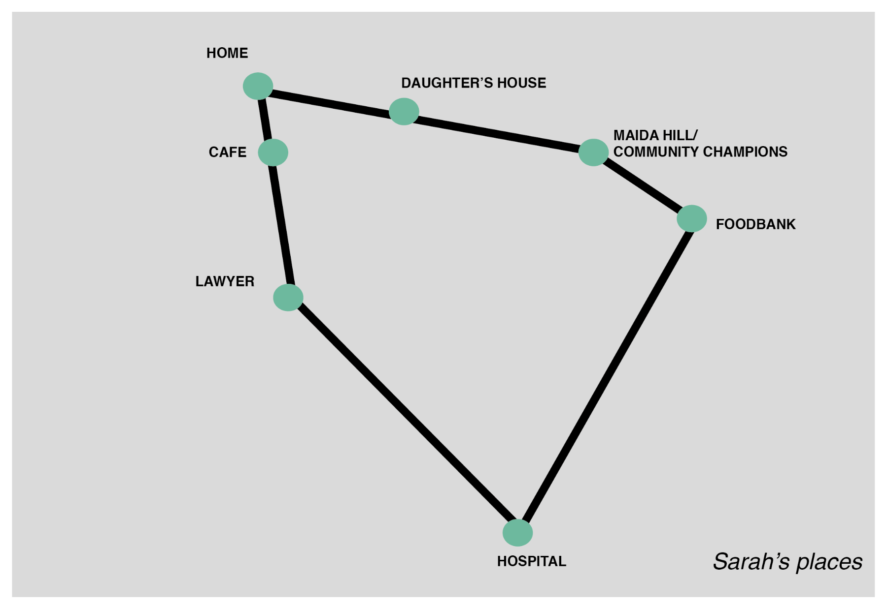
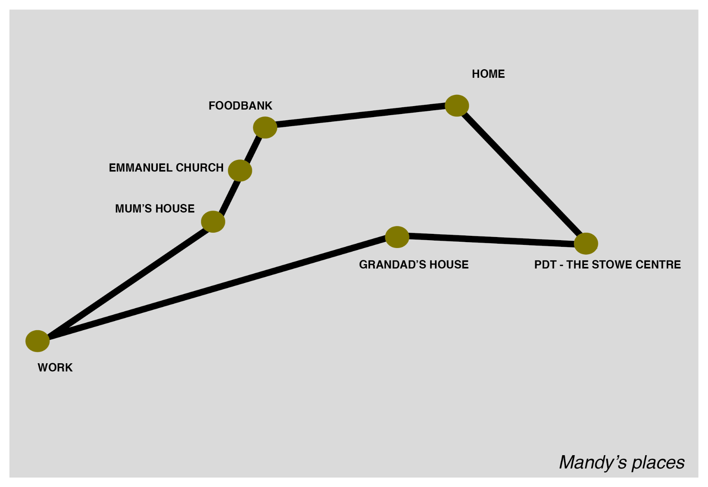
each resident's places, mapped from their own story
synthesis & personas
03
Turning stories into opportunities for the council
Through the research, we synthesised our findings into a framework for understanding residents' capabilities and needs, anchored in four composite personas used to communicate insights and ground our recommendations.
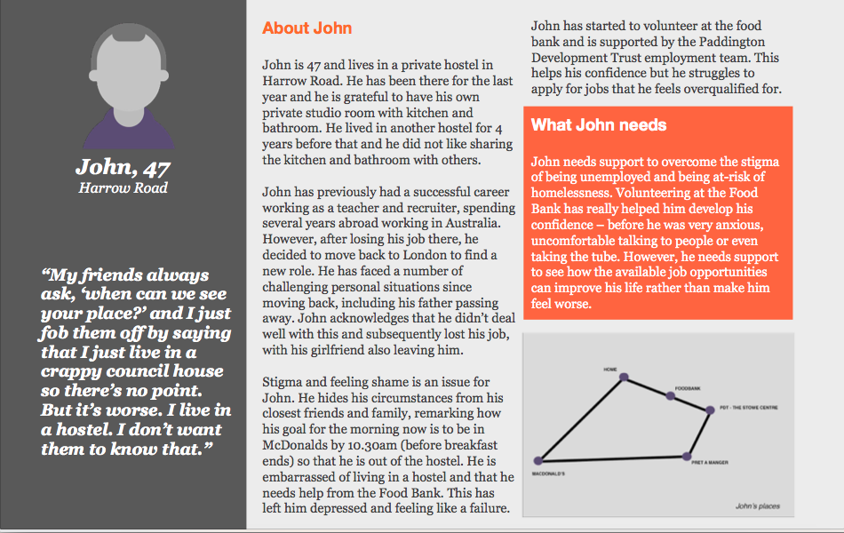
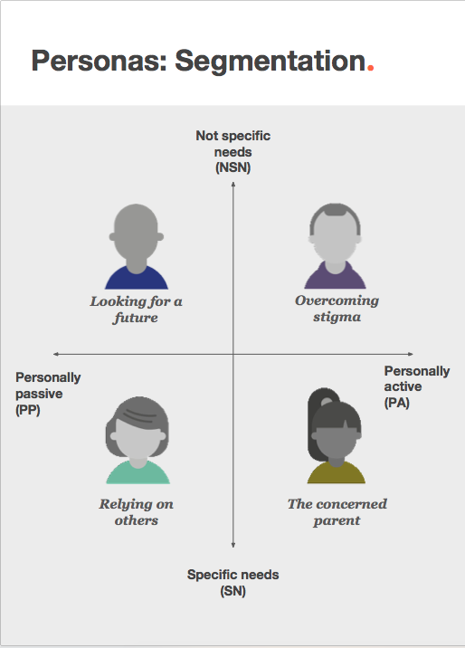
John, one of four composite personas — his story, what he needs, and the places in his week — and the segmentation behind the four personas
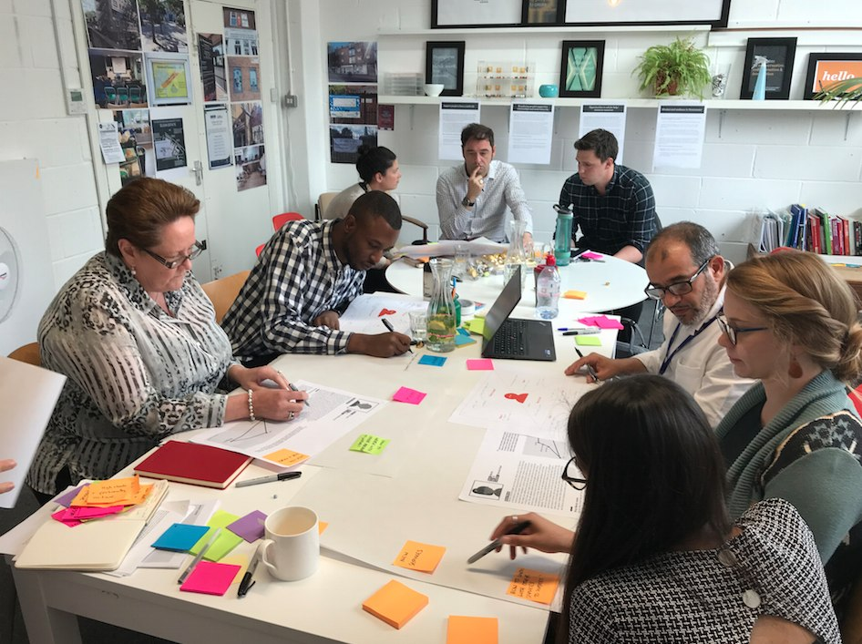
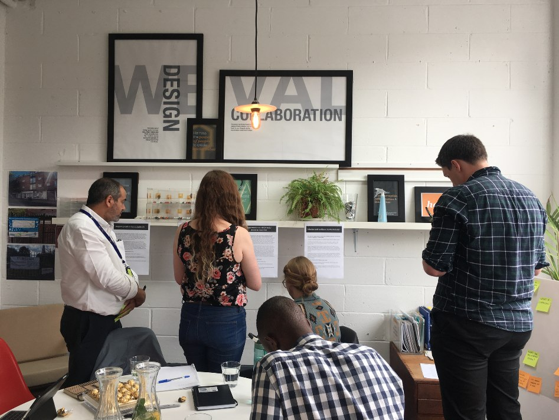
sharing the research back — council staff and community partners working through the personas and opportunities
outcome
The data, tools and contacts we gathered laid the groundwork for further engagement with organisations and individuals in the community.